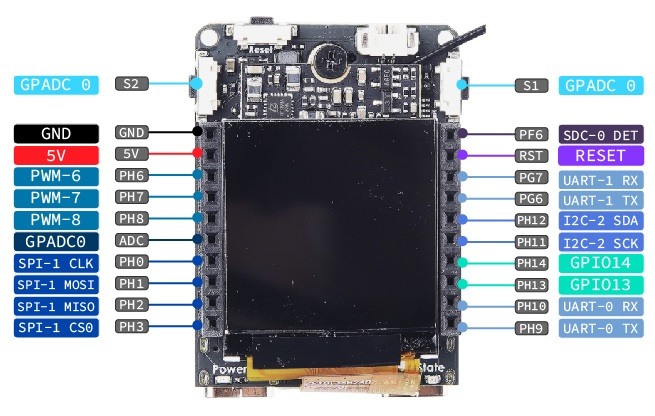

中文
中文Maix-II-Dock(M2dock) 介绍
Maix-II V831 系列会被逐渐淘汰，如果你正准备购买 v831, 请立刻选择 MaixCAM;
也欢迎 v831 用户升级到 MaixCAM
Maix-II-Dock 是一块精致小巧的 AI + IOT + 音视频处理 开发板， 支持常规 Linux 开发的同时， 有特有的 AI 硬件加速 特性，配合 Sipeed 提供的易用的软件生态，快速让你的边缘 AI 应用落地。
Maix-II Dock 已经集成了大量开箱即用的功能，比如 AI 图像和物体识别，AI 语音识别，AI 人脸识别，AI 车牌识别，小车巡线， 传统OpenCV支持，常用硬件外设库等等。
下面是部分功能展示视频：
常见应用场景：STEM 和大学教育, 工业流水线工具，智能家居，智能机器人，智能监控场景等等。
硬件上， 基于全志 V831 芯片， 以【核心板】+【底板】的形式组成开发板，可以直接使用开发板，也可以只使用核心板根据需求自行设计底板，方便快速完成开发。
软件上， 除了可以直接使用全志提供的资料进行开发（部分可能需要找全志获取）外，Sipeed 提供了非常方便的 Python SDK（MaixPy3）以及 C SDK （libmaix）。
平台上，提供在线模型训练服务（MaixHub），方便刚入门也能无门槛快速训练 AI 模型。
购买：sipeed.taobao.com
M2 核心板
22mm x 24.5mm 的尺寸，使用金手指引出引脚，体积小巧又方便开发。

核心板硬件资料下载 Sipeed_Maix_II_3101
V831 芯片介绍
全志 V831, 单核 Cortex-A7 800MHz， 64MiB 片内 DDR2 内存， 高性价比能跑 Linux 的SOC，同时支持硬件 AI 加速（0.2Tops 算力）(yolov2 45 ms ~ 60 ms)，可以当成普通 Linux SOC 使用， 也可以用于边缘 AI 应用， 更详细的参数请看手册和下文。
芯片手册： V833／V831 Datasheet V1.0.pdf
内部结构图：

M2核心板参数
与 Maix-I 对比
| 项目 | Maix-I (K210) | Maix-II (V831) |
|---|---|---|
| 主控芯片 CPU |
400~600Mhz | 800~1000Mhz |
| 视频编码器 Video encoder |
None | H.264, up to 1080p@30fps H265, up to 1080p@30fps JPEG, up to 1080p@30fps |
| AI加速器 NPU |
0.23TOPS（官方宣称 1TOPS 计算方法不同） support Conv+BN+ACT+POOL |
0.2TOPS support Conv,Inner_Product,Pool,Eltwise,ACT,BN,Split,Concat |
| 内存 Memory |
8MB SRAM | SIP 64MB DDR2 |
| 存储 Storage |
16MB SPI Nor Flash | 可选的16M flash(默认空贴) |
| 摄像头 Camera |
DVP, 最高输入30W像素 | 2lane MIPI, 最高支持1080P@60fps |
| 显示 Display |
8bit MCU LCD | 8bit MCU LCD, 配转接板可接最大10寸RGB LCD |
| SDIO | None | SMHC x2 (SDC0, SDC1) |
| SPI | SPIx3 | SPI x2 (SPI0, SPI1) |
| I2C | I2C x3 | I2C x4 (TWI0, TWI1, TWI2, TWI3) |
| I2S | 8bit I2S | I2S x1 (I2S0) |
| Ethernet | None | 10/100 Mbit/s Ethernet port with RMII interface |
| ADC | None | 1-ch 6bit LRADC for key |
| Audio | None | LINEOUTP + MICIN1P/N |
| 开发软件 | Maixpy/C | MaixPy3/C/linux |
底板
一般情况下可以认为底板屏幕为正面，带摄像头为背面。

底板硬件资料下载 点我跳转
感谢热心网友分享的 M2 模块底板母座 PCB 封装
底板硬件参数

| 标号 | Maix II 部件 | 功能 | 备注 |
|---|---|---|---|
| 1 | M.2 B-KEY 母座*1 | 用于连接 V831 核心版 | 出厂已连接 |
| 2 | 核心板M2 铜柱螺母*1 | 用于配合 M2 螺丝固定 V831 核心板 | 出厂已固定 |
| 3 | 电源指示 LED 灯*1 | 用于指示底板是否正常通电 | --- |
| 4 | 状态指示 LED灯*1 | 用户可编程LED灯，一般用于状态指示 | --- |
| 5 | CPU 复位键*1 | 按下可重启 V831 芯片 | --- |
| 6 | 用户按键*2 | 可以控制两路 IO 电平，自定义功能 | --- |
| 7 | Wi-Fi 模块*1 | 型号 RTL8189FTV，用于给模组提供 Wi-Fi 功能 | SDIO 接口 |
| 8 | BTB 摄像头接口*1 | 用于连接 BTB 摄像头模块 | 出厂已连接 |
| 9 | 摄像头 M2 铜柱螺母*2 | 用于固定 BTB 摄像头 | 出厂已固定 |
| 10 | FHD 摄像头*1 | 默认SP2305 Sensor BTB形式，1080P | 默认含6mm焦距M12镜头，用户可选配其他焦距镜头 |
| 11 | USB 转 UART 芯片*1 | 提供串口通信功能 | 出厂已烧录固件 |
| 12 | Type-C 接口(USB OTG) *1 | 用于 V831 的 USB OTG功能 | 可用于模组供电 |
| 13 | Type-C 接口(UART) *1 | 用于对V831通常的串口调试 | 可用于模组供电 |
| 14 | 三轴加速度传感器*1 | I2C接口，可提供3轴的加速度数据 | --- |
| 15 | microSD 卡槽*1 | 用于外接 microSD卡 | 模组的系统默认从SD卡引导 |
| 16 | LCD 接口*1 | FPC0.5mm 24Pin，MCU 接口 | --- |
| 17 | IPS 高清屏幕*1 | 1.3寸IPS屏幕，分辨率240*240 | 出厂已连接 |
| 18 | IPEX Wi-Fi天线座 | IPEX(一代) Wi-Fi天线 | --- |
| 19 | 外拓排母 | 引出 V831 的 通用IO口，可用于连接外设 | --- |
| 20 | 扬声器接口*1 | MX1.25 2P接口（间距1.25mm） | --- |
| 21 | 扬声器*1 | 8Ω1W 1609复合铝膜扬声器 | 出厂已连接 |
| 22 | 麦克风*1 | 模拟驻极体麦克风 | --- |
资源汇总
硬件: MaixII 硬件资料库
软件：
- Python SDK： MaixPy3 软件文档 （Python 语法，有大量易用 API，适合上手开发）
- C SDK: libmiax （适合高级开发者，另外要使用 OpenCV 也推荐使用此 SDK， Python 版本的 OpenCV 占用内存比较大，可能会导致内存不足）
- MaixHub 模型平台（AI 模型下载、在线训练、项目分享）： MaixHub
- 全志 tina-V83x SDK： Tina-Linux/tina-V83x
- 工具链： dl.sipeed.com 或者 github
Maix-II-Dock 上手开发路线指南
- 烧录系统镜像： 因为需要使用 Linux 系统（tina-linux）， 所以需要先学习烧录系统镜像，就类似学会电脑重装系统一样，这样在遇到问题就可以重来，在左侧目录找到“烧录系统”文章查看